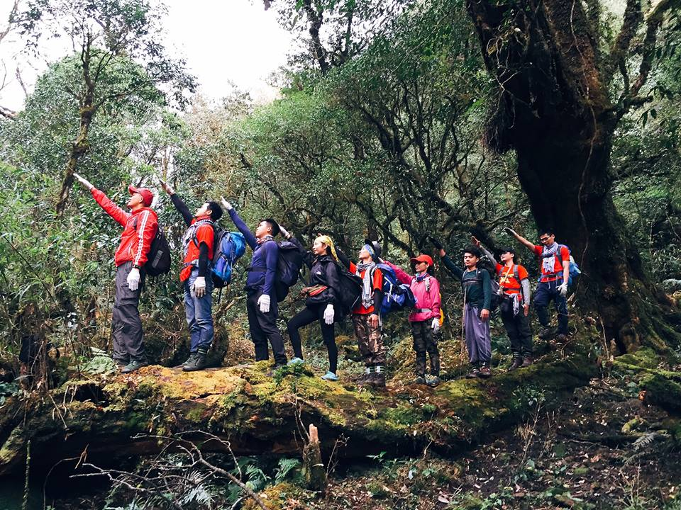
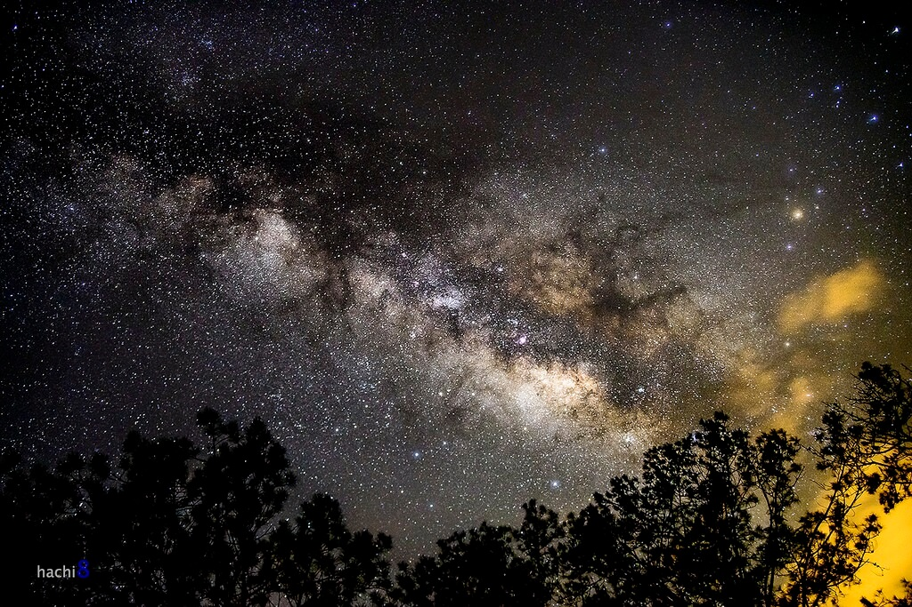
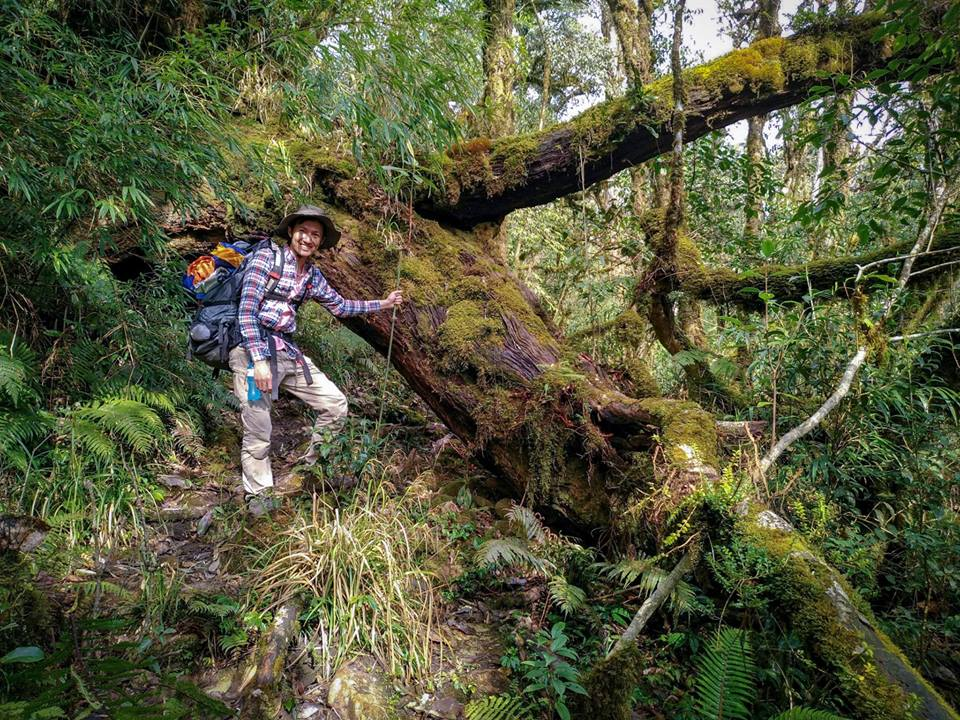

Pu Ta Leng (3.049m) là đỉnh núi cao thứ 2 của Việt Nam, tọa lạc tại huyện Phong Thổ, tỉnh Lai Châu. Đây là một trong những đỉnh núi khó chinh phục và hoang sơ nhất Việt Nam.
Đặc trưng của Pu Ta Leng là thảm thực vật đa dạng, rêu và địa y phủ kín các thân cây cổ thụ đến cả những tảng đá dọc lối đi. Hành trình leo Pu Ta Leng đòi hỏi sức bền cao do địa hình dốc liên tục, nhiều đoạn bùn lầy và thời tiết thay đổi thất thường. Đổi lại, bạn sẽ được thưởng ngoạn những cảnh rừng nguyên sinh tuyệt đẹp và khung cảnh đỉnh núi phủ mây huyền ảo.
Tour ghép thường khởi hành vào cuối tuần. Quý khách vui lòng liên hệ Hidden Path để xác nhận lịch cụ thể.
Đặc điểm nổi bật
Bao gồm & Không bao gồm
✓ Bao gồm
- Xe đưa đón Hà Nội – Lai Châu – Hà Nội
- Hướng dẫn viên chuyên nghiệp
- Porter địa phương hỗ trợ 1:1
- Toàn bộ bữa ăn trong hành trình
- Lều ngủ, túi ngủ, thảm nằm
- Gậy leo núi, nước uống
- Huy chương chinh phục đỉnh
✗ Không bao gồm
- Chi phí cá nhân phát sinh
- Đồ ăn vặt, nước uống riêng
- Trang phục và giày leo núi
- Bảo hiểm du lịch
- Chi phí phát sinh do thời tiết
Lịch trình tour chinh phục Pu Ta Leng
19h00: Xe giường nằm cao cấp xuất phát từ Hà Nội, đón quý khách tại điểm hẹn. Trưởng đoàn (Guide) làm quen, phổ biến lịch trình và những lưu ý quan trọng. Chuyến xe lướt đi trong đêm, đưa quý khách chìm vào giấc ngủ êm ái trên cung đường Tây Bắc, chuẩn bị năng lượng cho ngày dài đầy thử thách phía trước.
Bữa ăn: Không.
Nghỉ đêm: Trên xe.
06h00: Đón bình minh tại Lai Châu. Cả đoàn vệ sinh cá nhân, nạp năng lượng bằng bữa sáng nóng hổi mang đậm hương vị vùng cao và sửa soạn lại balo, chuẩn bị hành lý.
08h00: Xe trung chuyển đưa đoàn di chuyển tới điểm xuất phát trekking nằm ẩn mình dưới chân núi.
09h00: Bắt đầu hành trình leo núi. Những bước chân đầu tiên đưa bạn tiến sâu vào cánh rừng nguyên sinh rậm rạp. Pu Ta Leng chào đón bằng những con suối róc rách, thảm thực vật đa dạng và những thân cây cổ thụ bám đầy rêu xanh ma mị, đẹp như một thế giới cổ tích.
12h00: Nghỉ trưa tại điểm dừng giữa rừng. Thưởng thức bữa trưa picnic giữa không gian thiên nhiên tĩnh lặng do các anh Porter chuẩn bị.
17h00: Đến điểm cắm trại. Cả đoàn cùng nhau hạ trại, dựng lều và nghỉ ngơi, giãn cơ sau ngày đầu tiên vất vả.
18h30: Ăn tối quanh bếp lửa. Thưởng thức bữa ăn thịnh soạn, nóng hổi giữa tiết trời se lạnh của núi rừng. Giao lưu và chuẩn bị chìm vào giấc ngủ để lấy sức cho ngày chinh phục chóp.
Bữa ăn: Sáng, Trưa, Tối.
Nghỉ đêm: Lều trại.
04h30: Tiếng gọi thức giấc vang lên trong không gian sương mờ. Bữa sáng gọn nhẹ và ly trà ấm giúp làm nóng cơ thể, chuẩn bị balo nhỏ (để lại đồ nặng tại lán) cho chặng leo đỉnh.
05h00: Xuất phát chinh phục đỉnh. Đoàn vượt qua chặng dốc đứng đầy thử thách nhất của hành trình, len lỏi qua các bụi trúc lùn đặc trưng. Nếu may mắn, bạn sẽ đón được bình minh tuyệt rực rỡ với biển mây bồng bềnh ngay dưới chân.
09h00: Vỡ òa cảm xúc khi chạm đỉnh Pu Ta Leng ở cao độ 3.049m – nóc nhà thứ 2 của Đông Dương. Mọi người cùng nhau chụp ảnh kỷ niệm, nhận huy chương vinh danh và phóng tầm mắt chiêm ngưỡng khung cảnh núi non Tây Bắc điệp trùng, hùng vĩ.
10h30: Sau khi ngắm cảnh thỏa thích, đoàn bắt đầu hành trình xuống núi quay về lán.
15h00: Về điểm cắm trại an toàn. Buổi chiều là khoảng thời gian tự do để bạn nghỉ ngơi, giãn cơ, tận hưởng sự bình yên của rừng già.
18h30: Thưởng thức bữa tối chúc mừng cả đoàn đã chinh phục thành công. Giao lưu đêm cuối giữa đại ngàn.
Bữa ăn: Sáng, Trưa, Tối.
Nghỉ đêm: Lều trại.
06h00: Thức giấc, đón ánh bình minh len lỏi qua tán lá. Cả đoàn ăn sáng và thu dọn trại, vệ sinh môi trường xung quanh.
07h00: Bắt đầu hành trình xuống núi về điểm xuất phát. Địa hình chủ yếu là đổ dốc nên tốc độ di chuyển sẽ nhanh hơn, đây là lúc bạn có thể thư thái ngắm nhìn lại thảm rêu ma mị dưới một góc nhìn khác.
12h00: Ra khỏi cửa rừng, xe trung chuyển đưa đoàn về lại trung tâm Lai Châu. Dùng bữa trưa ăn mừng thành công với các đặc sản địa phương.
14h00: Lên xe giường nằm, rời Lai Châu để khởi hành về Hà Nội.
22h00: Về tới Hà Nội. Trưởng đoàn chia tay các thành viên, khép lại chương trình chinh phục Pu Ta Leng đầy cảm xúc và đáng nhớ.
Bữa ăn: Sáng, Trưa.
Độ khó
Tour leo núi Pu Ta Leng được đánh giá ở mức Thách thức – chỉ phù hợp với người có thể lực tốt và đã có kinh nghiệm leo núi. Địa hình dốc liên tục, nhiều đoạn bùn lầy, thời tiết thay đổi nhanh.
Chuẩn bị trước tour
Thư viện ảnh


